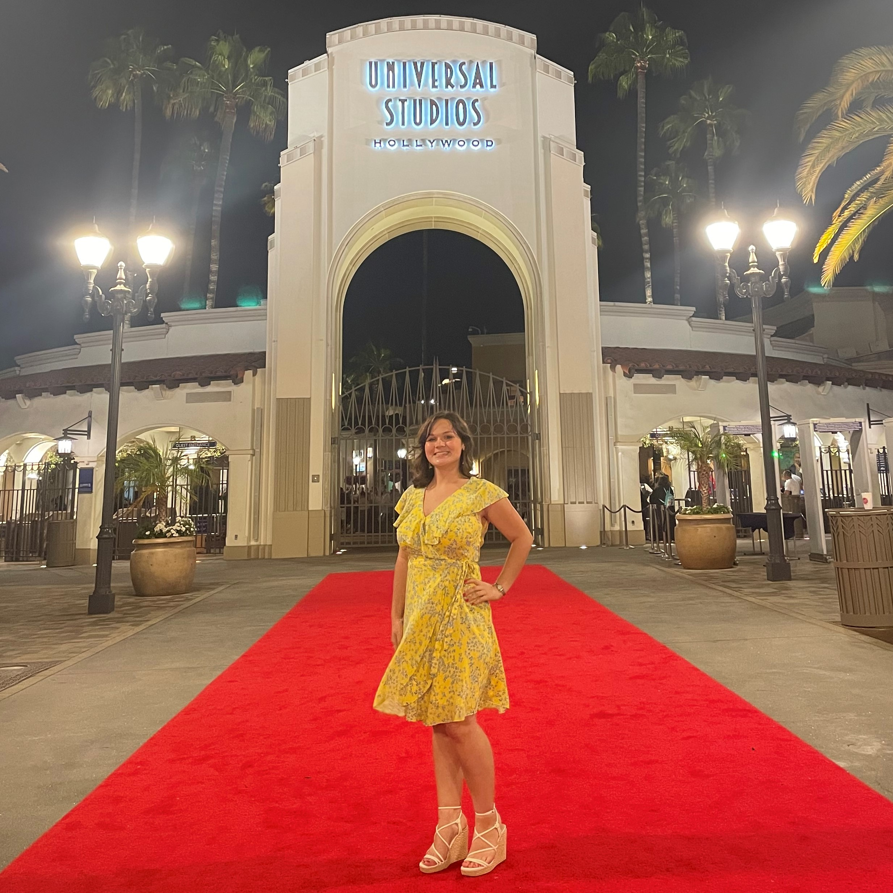

Analyst, Artist, Programmer
About the Owner
I am a driven, resourceful, and creative person with a passion for storytelling and entertainment. My educational background in Computational Media – a union of computer science, media, communication, and design – has led me to a nearly 5-year career with NBCUniversal whose Media Tech Programs led me to gain experience in multiple organizations. This background along with my role as Co-Chair of the L.A. chapter of NBCUniversal’s TECHWomen makes me a distinctive candidate with both technical and operational expertise.
You can email me via this address.
Connect with me on LinkedIn.
